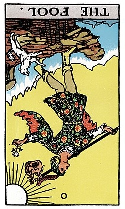

The Fool (Reversed)

Luck: Things may feel uncertain, with hesitation affecting how smoothly the day unfolds. Plans could shift unexpectedly, and progress may feel slightly blocked.
Mood: Tense, cautious, and a bit anxious. There's curiosity to try something new, but also fear of making mistakes or not being ready.
Possible Event: I might struggle to start a task or feel unsure about how to begin. Small mistakes or lack of preparation could lead to frustration, possibly causing a change of plans midway.
Luck
Mood
Possible Event